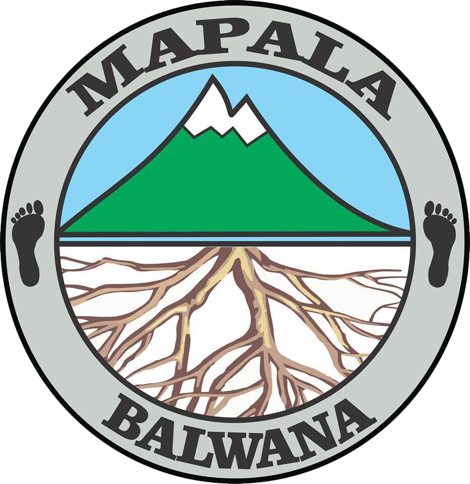

- HOME
- PORTAL
- ORMAWA
- KOTAK SARAN

Membentuk pribadi anggota yang tanggap akan kelestarian alam dan lingkungan, memiliki rasa persaudaraan dan loyalitas yang tinggi dalam berorganisasi, serta bersedia mengabdi kepada Tuhan, bangsa, dan tanah air.

Logo Balwana
Visit our social media : instagram.com/balwanaunej/